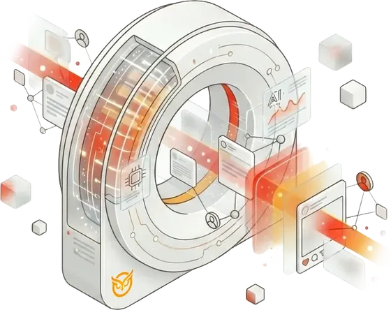
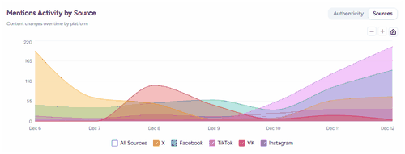

The company says its narrative intelligence solution analyzes actors, behaviors and content to distinguish authentic activity from coordinated manipulation.
+39%
Q2 revenue, $1.9M vs. $1.3M a year earlier (Q1: up 12%)
Market Shaper
Gartner®, June 2026
Understand how actors, behaviors, and content connect across platforms.
Distinguish organic activity from coordinated orchestration.
Translate evidence and coordination indicators into clear mitigation workflows.

Unaudited. Source: Cyabra’s 2026 10-Qs.
$1.9M
Q2 2026 revenue, against $1.3M in Q2 2025
$3.3M
First-half 2026 revenue, up 26% on $2.6M
$8.1M
ARR at Jun 30, 2026, up 29% on a year earlier ($6.1M at Dec ’25). Company-defined; not GAAP or a forecast.
Source: Gartner, Emerging Market Quadrant for Narrative Intelligence — Startup Vendors, 26 June 2026. Company announcements, dated as released.
Advertisement. Not an offer, advice or recommendation. Revenue unaudited, as of Jun 30, 2026; ARR is company-defined, not GAAP. Gartner® is a trademark of Gartner, Inc.; Gartner does not endorse any vendor, product or service in its research. Forward-looking statements on growth, contracts and products involve risks and uncertainties. See SEC filings for risk factors.